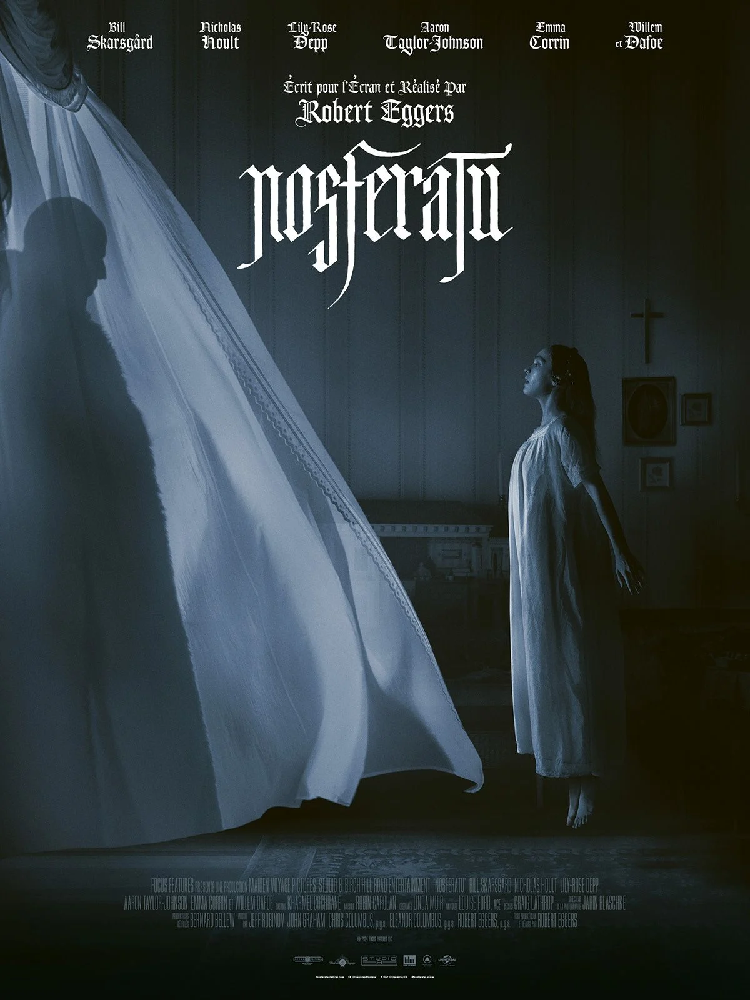

| Position |
Aperçu du film |
| Titre du film |
Synopsis |
Image du film |
| 1 |
Nosferatu |
En 1838, le clerc de notaire Hulter est envoyé en Transylvanie chez le comte Orlock, le vampire Nosferatu.
Celui-ci sème la terreur et la peste dans un village voisin, avant de tenter de séduire Ellen, la fiancée de son invité.
Mais la lumière de l'aube lui sera fatale.
|

|
| 2 |
The Substance |
Avec The Substance, vous pouvez générer une autre version de vous-même, plus jeune, plus belle, plus parfaite.
Il suffit de partager le temps. Une semaine pour l'une, une semaine pour l'autre. Un équilibre parfait de sept jours.
Facile n'est-ce pas ? Si vous respectez les instructions, qu'est ce qui pourrait mal tourner ?
|

|
| 3 |
Back in Action |
Alors qu'ils ont démissionné depuis longtemps de la CIA pour fonder une famille, Emily et Matt sont rattrapés
malgré eux par l'espionnage lorsque leur couverture est démasquée.
|
|
| 4 |
Wicked |
Elphaba, une jeune femme incomprise à cause de la couleur inhabituelle de sa peau verte ne soupçonne même pas
l'étendue de ses pouvoirs. À ses côtés, Glinda qui, aussi populaire que privilégiée, ne connaît pas encore la vraie
nature de son cœur. Leur rencontre à l'Université de Shiz, dans le fantastique monde d'Oz, marque le début d'une amitié
improbable mais profonde. Cependant, leur rapport avec Le Magicien d'Oz va mettre à mal cette amitié et voir leurs
chemins s'éloigner.
|
|